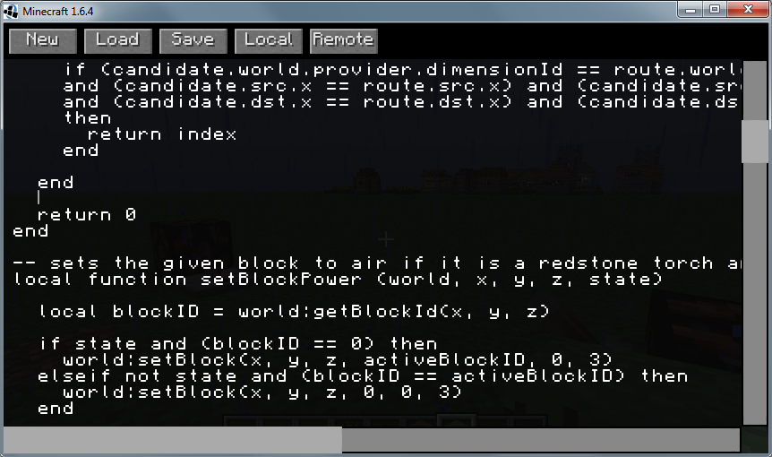
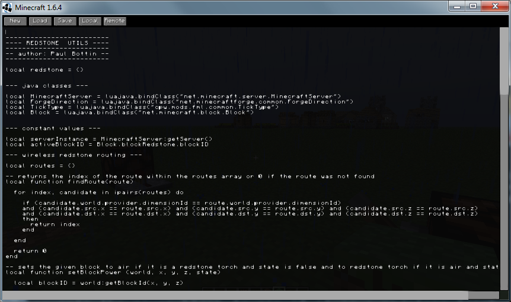

Minecraft Script Pack
A LUA script engine for Minecraft
Description
This mod adds LUA scripting support to Minecraft. It is developed on top of Minecraft Forge so you will need to have it properly installed.
Scope
This mod runs on Minecraft 1.6.4 with Forge 9.11.1 or any later version. It can run in singleplayer, client hosted multiplayer and dedicated server multiplayer.
Features
- an integrated script editor with monospaced font rendering
- scripts can run on the server or in the client
- runtime deobfuscation (scripts can use most of the Minecraft Forge API by using the luajava library)
- deobfuscation information will be automatically updated to match the Forge version currently running
- clients are only required to install this mod if they want to use the script editor or client side scripting
- a "/script" command can be used to run a script file on the server
- only server ops are allowed to run scripts on the server
Installation
Just install Forge and put the JAR file into the mods-directory of your Minecraft installation.
Screenshots

